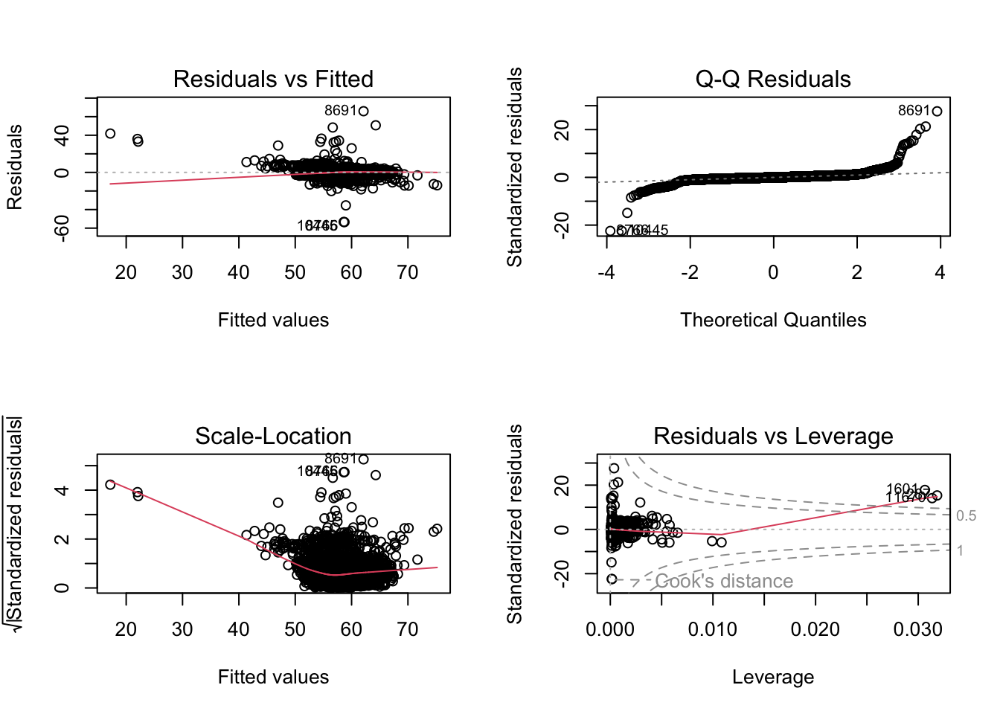
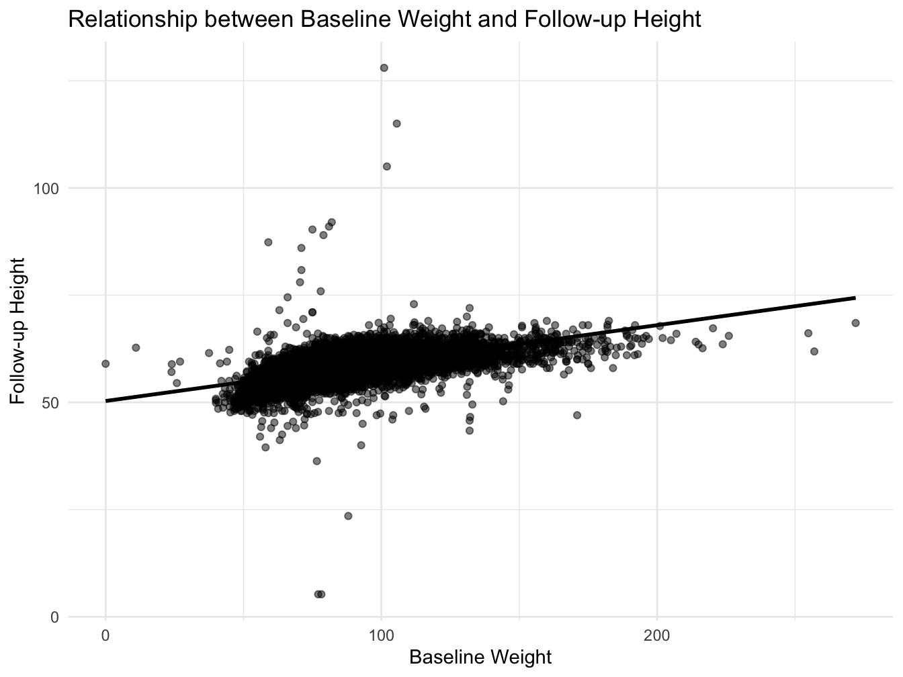

This example assesses whether height, measured at the 1-Year follow-up (T1) in a subsample of ABCD participants, is predicted by weight and height measured at baseline (T0). A visual inspection is further conducted via a scatterplot to graphically represent the relationship between height at Year_1 and weight at baseline, controlling for height at baseline. The ensuing analysis and interpretations are detailed in the subsequent sections.
This code installs the r packages necessary for this example, if they are not already installed
Code
# Create a list of required packagespackages_required <-c("tidyverse","rstatix","DT","lme4", "gtsummary","easystats")# Check which packages are not installed and install thempackages_to_install <-setdiff(packages_required, rownames(installed.packages()))if (length(packages_to_install) >0) {install.packages(packages_to_install)}# Load the required packageslapply(packages_required, library, character.only =TRUE)
This code loads the r libraries necessary for this example
Code
library(tidyverse) # Collection of R packages for data sciencelibrary(rstatix) # Pipe-friendly framework for basic statistical testslibrary(DT) # Rendering interactive data tableslibrary(lme4) # Linear mixed-effects modelslibrary(easystats) #library(gtsummary) #
This code reads in and shows the data to be used in the current example
Code
# Set the data pathsdata_path_1 <-"/Users/shawes/ABCD/data/rds/abcd_5.0_rds/demo5.0.rds"data_path_2 <-"/Users/shawes/ABCD/data/rds/abcd_5.0_rds/core-rds-5.0/non-imaging_excluding_nt_5.0.rds"# Read the datadata_demographics <-readRDS(data_path_1)data_nonimaging <-readRDS(data_path_2)# Subset the nonimaging data to include desired variablesselected_vars <-c("src_subject_id", "eventname", "nihtbx_totalcomp_fc", "anthroweightcalc", "anthroheightcalc")subset_data <- data_nonimaging[, selected_vars]library(dplyr)# # Merge the datasets on 'src_subject_id' and 'eventname'merged_data <- data_demographics %>%full_join(subset_data, by =c("src_subject_id", "eventname"))# Inspect the merged data structurestr(merged_data)# Define event names to be retained in the analysis and convert variables to appropriate data typeseventnames_to_include <-c("baseline_year_1_arm_1","1_year_follow_up_y_arm_1","2_year_follow_up_y_arm_1","3_year_follow_up_y_arm_1","4_year_follow_up_y_arm_1")df <- merged_data %>%filter(eventname %in% eventnames_to_include) %>%mutate(src_subject_id =as.factor(src_subject_id),eventname =factor(eventname, levels = eventnames_to_include, ordered =TRUE),age =as.numeric(age),sex =as.factor(sex),race.4level =as.factor(race.4level),hisp =as.factor(hisp),high.educ.bl =as.factor(high.educ.bl),household.income.bl =as.factor(household.income.bl),acs_raked_propensity_score =as.numeric(acs_raked_propensity_score),rel_family_id.bl =as.factor(rel_family_id.bl),site_id_l =as.factor(site_id_l),nihtbx_totalcomp_fc =as.numeric(nihtbx_totalcomp_fc),anthroweightcalc =as.numeric(anthroweightcalc),anthroheightcalc =as.numeric(anthroheightcalc) ) %>%# Exclude cases from unused assessment wavesfilter(!is.na(eventname))
The code snippet below tells R to conduct a multiple regression analysis by subtracting each participant’s height at T1 from their height at T0. Relevant summary statistics are also provided.
Compute Multiple Regression Model
Code
# Split data using the correct eventname valuesbaseline_data <- df %>%filter(eventname =="baseline_year_1_arm_1") %>%select(src_subject_id, Height_baseline = anthroheightcalc, Weight_baseline = anthroweightcalc)followup_data <- df %>%filter(eventname =="1_year_follow_up_y_arm_1") %>%select(src_subject_id, Height_followup = anthroheightcalc)# Merge baseline and follow-up datamerged_data <- baseline_data %>%left_join(followup_data, by ="src_subject_id")# Check the first few rows of the merged data#head(merged_data)# Fit the regression model excluding NA valuesmodel <-lm(Height_followup ~ Height_baseline + Weight_baseline, data = merged_data, na.action = na.exclude)
Call:
lm(formula = Height_followup ~ Height_baseline + Weight_baseline,
data = merged_data, na.action = na.exclude)
Residuals:
Min 1Q Median 3Q Max
-53.489 -0.826 -0.085 0.741 65.877
Coefficients:
Estimate Std. Error t value Pr(>|t|)
(Intercept) 17.181590 0.417118 41.19 <2e-16 ***
Height_baseline 0.686647 0.008475 81.03 <2e-16 ***
Weight_baseline 0.030256 0.001197 25.28 <2e-16 ***
---
Signif. codes: 0 '***' 0.001 '**' 0.01 '*' 0.05 '.' 0.1 ' ' 1
Residual standard error: 2.383 on 11130 degrees of freedom
(735 observations deleted due to missingness)
Multiple R-squared: 0.5753, Adjusted R-squared: 0.5753
F-statistic: 7539 on 2 and 11130 DF, p-value: < 2.2e-16
Code
par(mfrow =c(2, 2)) # Set up a 2x2 plotting areaplot(model) # Generate diagnostic plots

This regression analysis evaluates how baseline height and weight predict children’s height at a 1-year follow-up. The output from our model provides several key statistics:
an F-statistic of 7539.2168865;
degrees of freedom of 11130;
parameter estimates for baseline height and weight;
standard errors for these estimates; and
p-values for the significance of these estimates.
For every one unit increase in baseline height, there’s an associated increase of approximately 0.687 units in the follow-up height, and this effect was statistically significant with a p-value of 0. Similarly, for every one unit increase in baseline weight, there’s an associated increase of approximately 0.0303 units in the follow-up height, which is also statistically significant with a p-value of 3.9902186^{-137}. Overall, this model explains a substantial portion of the variance in follow-up height, with an adjusted R-squared value of 0.5753. The overall model is highly significant with a p-value less than 0, indicating that the predictors, collectively, have a significant relationship with the dependent variable.
Code
# Scatterplot with regression line for Weight_baselineggplot(merged_data, aes(x = Weight_baseline, y = Height_followup)) +geom_point(alpha =0.5) +geom_smooth(method ="lm", color ="black") +labs(title ="Relationship between Baseline Weight and Follow-up Height",x ="Baseline Weight",y ="Follow-up Height") +theme_minimal()

The scatterplot visually depicts the relationship between children’s weights at baseline (Weight_baseline) and their heights at Year_1 (Height_followup). Each point on the plot represents a child, with their baseline weight plotted on the x-axis and their Year_1 height on the y-axis. The clear positive linear trend, as illustrated by the black regression line, indicates that children who had higher weights at baseline generally had higher heights at Year_1. While further statistical analyses can quantify the strength and direction of this relationship, visually, the data suggests a pronounced positive association between baseline weight and follow-up height.
The regression analysis was conducted to predict children’s height at the 1-Year follow-up using their baseline height (Height_baseline) and weight (Weight_baseline). Both predictors were statistically significant. Specifically, for every one-unit increase in baseline height, the height at Year_1 increased by approximately 0.687 units, while holding weight constant. Similarly, for every one-unit increase in baseline weight, the height at Year_1 increased by about 0.0303 units, while holding baseline height constant. The overall model explained a substantial 57.53% of the variance in height at the 1-Year follow-up, as indicated by the adjusted R-squared value.
Source Code
---title: "Residualized Change Scores"author: "Biostatistics Working Group"---# Mulitple Regression {.unnumbered}## Overview<p>This example assesses whether height, measured at the 1-Year follow-up (T1) in a subsample of ABCD participants, is predicted by weight and height measured at baseline (T0). A visual inspection is further conducted via a scatterplot to graphically represent the relationship between height at Year_1 and weight at baseline, controlling for height at baseline. The ensuing analysis and interpretations are detailed in the subsequent sections.</p>## Preliminary Setup::: panel-tabset### Install Packages {.tabset .tabset-fade .tabset-pills}::: blue> **This code installs the r packages necessary for this example, if> they are not already installed**```{r pckg-install}#| echo: TRUE#| messages: FALSE#| warning: FALSE#| output: FALSE# Create a list of required packagespackages_required <-c("tidyverse","rstatix","DT","lme4", "gtsummary","easystats")# Check which packages are not installed and install thempackages_to_install <-setdiff(packages_required, rownames(installed.packages()))if (length(packages_to_install) >0) {install.packages(packages_to_install)}# Load the required packageslapply(packages_required, library, character.only =TRUE)```:::### Load Packages::: blue**This code loads the r libraries necessary for this example**```{r lib-load}#| echo: TRUE#| messages: FALSE#| warning: FALSE#| output: FALSElibrary(tidyverse) # Collection of R packages for data sciencelibrary(rstatix) # Pipe-friendly framework for basic statistical testslibrary(DT) # Rendering interactive data tableslibrary(lme4) # Linear mixed-effects modelslibrary(easystats) #library(gtsummary) #```:::### Config Options::: blue**This code configures knitr code chunk options**```{r config}#| echo: TRUE#| messages: FALSE#| warning: FALSE#| output: FALSEknitr::opts_chunk$set(echo = T, message=F, warning=F, error=F, comment=NA, cache=T, code_folding=T,R.options=list(width=220, digits =3),fig.align='center', out.width='75%', fig.asp=.75)```::::::## Descriptives Overview::: panel-tabset### Read and View Data {.tabset .tabset-fade .tabset-pills}::: blue**This code reads in and shows the data to be used in the currentexample**```{r read-data}#| echo: TRUE#| messages: FALSE#| warning: FALSE#| output: FALSE#| cache: FALSE# Set the data pathsdata_path_1 <-"/Users/shawes/ABCD/data/rds/abcd_5.0_rds/demo5.0.rds"data_path_2 <-"/Users/shawes/ABCD/data/rds/abcd_5.0_rds/core-rds-5.0/non-imaging_excluding_nt_5.0.rds"# Read the datadata_demographics <-readRDS(data_path_1)data_nonimaging <-readRDS(data_path_2)# Subset the nonimaging data to include desired variablesselected_vars <-c("src_subject_id", "eventname", "nihtbx_totalcomp_fc", "anthroweightcalc", "anthroheightcalc")subset_data <- data_nonimaging[, selected_vars]library(dplyr)# # Merge the datasets on 'src_subject_id' and 'eventname'merged_data <- data_demographics %>%full_join(subset_data, by =c("src_subject_id", "eventname"))# Inspect the merged data structurestr(merged_data)# Define event names to be retained in the analysis and convert variables to appropriate data typeseventnames_to_include <-c("baseline_year_1_arm_1","1_year_follow_up_y_arm_1","2_year_follow_up_y_arm_1","3_year_follow_up_y_arm_1","4_year_follow_up_y_arm_1")df <- merged_data %>%filter(eventname %in% eventnames_to_include) %>%mutate(src_subject_id =as.factor(src_subject_id),eventname =factor(eventname, levels = eventnames_to_include, ordered =TRUE),age =as.numeric(age),sex =as.factor(sex),race.4level =as.factor(race.4level),hisp =as.factor(hisp),high.educ.bl =as.factor(high.educ.bl),household.income.bl =as.factor(household.income.bl),acs_raked_propensity_score =as.numeric(acs_raked_propensity_score),rel_family_id.bl =as.factor(rel_family_id.bl),site_id_l =as.factor(site_id_l),nihtbx_totalcomp_fc =as.numeric(nihtbx_totalcomp_fc),anthroweightcalc =as.numeric(anthroweightcalc),anthroheightcalc =as.numeric(anthroheightcalc) ) %>%# Exclude cases from unused assessment wavesfilter(!is.na(eventname))```:::### Descriptives::: blue**This code creates a descriptives table**```{r descriptives}#| echo: TRUE#| messages: FALSE#| warning: FALSEdescriptives_table <- df %>%select(eventname, sex, race.4level, hisp, anthroweightcalc) %>%mutate(eventname =factor(eventname, labels =c("Baseline", "Year 1","Year 2","Year 3","Year 4"))) %>%mutate(sex =factor(sex, labels =c("Female", "Male"))) %>%tbl_summary(by = eventname,missing ="no",label =list(sex ~"Sex", race.4level ~"Race", hisp ~"Hispanic", anthroweightcalc ~"Weight"),statistic =list(all_continuous() ~"{mean} ({sd}) )", all_categorical() ~"{p}%"), ) %>%modify_header(all_stat_cols() ~"**{level}**<br>N = {n}") %>%bold_labels() %>%italicize_levels() %>%modify_spanning_header(all_stat_cols() ~"**Assessment Wave**")theme_gtsummary_compact()descriptives_table```::::::## Results::: panel-tabset### Build Model {.tabset .tabset-fade .tabset-pills}::: blueThe code snippet below tells R to conduct a multiple regression analysis by subtracting each participant's height at T1 from their height at T0. Relevant summary statistics are also provided.**Compute Multiple Regression Model**```{r build-model-resid-regression-1}#| class.source: 'fold-hide'#| message: FALSE#| warning: FALSE#| echo: TRUE# Split data using the correct eventname valuesbaseline_data <- df %>%filter(eventname =="baseline_year_1_arm_1") %>%select(src_subject_id, Height_baseline = anthroheightcalc, Weight_baseline = anthroweightcalc)followup_data <- df %>%filter(eventname =="1_year_follow_up_y_arm_1") %>%select(src_subject_id, Height_followup = anthroheightcalc)# Merge baseline and follow-up datamerged_data <- baseline_data %>%left_join(followup_data, by ="src_subject_id")# Check the first few rows of the merged data#head(merged_data)# Fit the regression model excluding NA valuesmodel <-lm(Height_followup ~ Height_baseline + Weight_baseline, data = merged_data, na.action = na.exclude)```:::### Model Summary {.tabset .tabset-fade .tabset-pills}::: blueA plot to show xxxxx.```{r model-checking}model_summary <-summary(model)print(model_summary)par(mfrow =c(2, 2)) # Set up a 2x2 plotting areaplot(model) # Generate diagnostic plots```This regression analysis evaluates how baseline height and weight predict children's height at a 1-year follow-up. The output from our model provides several key statistics:i. an F-statistic of `r model_summary$fstatistic[1]`;ii. degrees of freedom of `r model_summary$df[2]`;iii. parameter estimates for baseline height and weight;iv. standard errors for these estimates; andv. p-values for the significance of these estimates.For every one unit increase in baseline height, there's an associated increase of approximately `r round(model_summary$coefficients["Height_baseline", "Estimate"], 3)` units in the follow-up height, and this effect was statistically significant with a p-value of `r model_summary$coefficients["Height_baseline", "Pr(>|t|)"]`. Similarly, for every one unit increase in baseline weight, there's an associated increase of approximately `r round(model_summary$coefficients["Weight_baseline", "Estimate"], 4)` units in the follow-up height, which is also statistically significant with a p-value of `r model_summary$coefficients["Weight_baseline", "Pr(>|t|)"]`. Overall, this model explains a substantial portion of the variance in follow-up height, with an adjusted R-squared value of `r round(model_summary$adj.r.squared, 4)`. The overall model is highly significant with a p-value less than `r model_summary$coefficients[1,4]`, indicating that the predictors, collectively, have a significant relationship with the dependent variable.:::### Model Plots {.tabset .tabset-fade .tabset-pills}::: blue```{r scatterplot}# Scatterplot with regression line for Weight_baselineggplot(merged_data, aes(x = Weight_baseline, y = Height_followup)) +geom_point(alpha =0.5) +geom_smooth(method ="lm", color ="black") +labs(title ="Relationship between Baseline Weight and Follow-up Height",x ="Baseline Weight",y ="Follow-up Height") +theme_minimal()```The scatterplot visually depicts the relationship between children's weights at baseline (`r names(merged_data)[3]`) and their heights at Year_1 (`r names(merged_data)[4]`). Each point on the plot represents a child, with their baseline weight plotted on the x-axis and their Year_1 height on the y-axis. The clear positive linear trend, as illustrated by the black regression line, indicates that children who had higher weights at baseline generally had higher heights at Year_1. While further statistical analyses can quantify the strength and direction of this relationship, visually, the data suggests a pronounced positive association between baseline weight and follow-up height.::::::## Wrapping Up<divclass="blue">::: panel-tabset### Write-up {.tabset .tabset-fade .tabset-pills}::: blueThe regression analysis was conducted to predict children's height at the 1-Year follow-up using their baseline height (`r names(merged_data)[2]`) and weight (`r names(merged_data)[3]`). Both predictors were statistically significant. Specifically, for every one-unit increase in baseline height, the height at Year_1 increased by approximately `r round(model_summary$coefficients["Height_baseline", "Estimate"], 3)` units, while holding weight constant. Similarly, for every one-unit increase in baseline weight, the height at Year_1 increased by about `r round(model_summary$coefficients["Weight_baseline", "Estimate"], 4)` units, while holding baseline height constant. The overall model explained a substantial `r round(model_summary$adj.r.squared * 100, 2)`% of the variance in height at the 1-Year follow-up, as indicated by the adjusted R-squared value.::::::